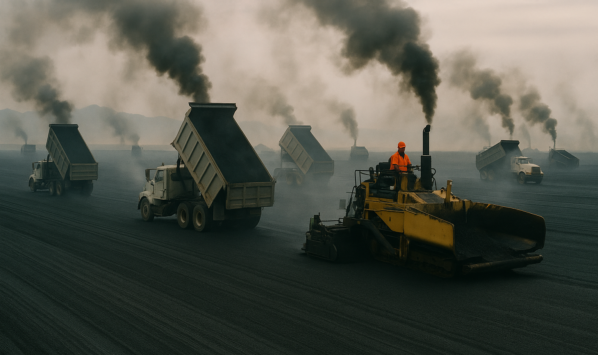

The Pave the Great Salt Lake Initiative proposes the complete concreting of this troublesome body of water, transforming an environmental hazard into a thriving commercial opportunity.
Our team of experts (car salesmen and paving contractors) have devised the perfect solution to Utah's lake problem: replace it with 1,700 square miles of premium concrete.
Progress is just a pour away!
Why worry about toxic dust when you can simply entomb it under 1,700 square miles of premium concrete? Out of sight, out of lungs!
Imagine the world's largest car dealership plaza! Utah can become the premier destination for purchasing slightly-above-market-price sedans.
For too long, migratory birds have used our airspace without contributing to our economy. These feathered immigrants arrive without paperwork!
It will take thousands of workers to pour this much concrete! The economic benefits will trickle down almost as effectively as the concrete will prevent water from doing.
Square Miles of Concrete
Car Dealerships Potential
Problem Solved
We've calculated that ecosystems provide far less tax revenue than car dealerships. The math is clear!
Snow is just frozen water that requires expensive removal. Less snow means more savings!
And deny ourselves the opportunity to create the world's largest parking lot? Why do you hate America?
Support our initiative to solve all of Utah's problems by replacing troublesome nature with convenient concrete!
DONATE TODAY!